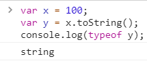
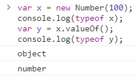
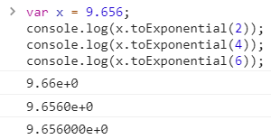
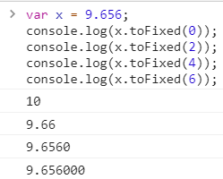
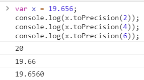
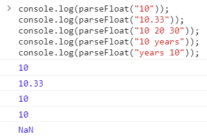
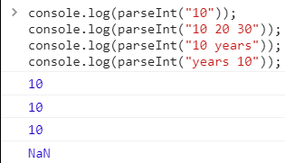
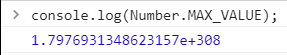
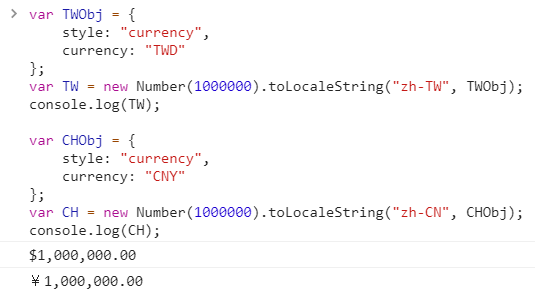

一、object.toString(int base)
其用途可以將值轉成字串型態
var x = 100; var y = x.toString(); console.log(typeof y);
其結果為

toString() 的另外一個功能，也可以利用 number.toString() 方法轉成各進制字串。
二、object.valueOf()
其用途可以將物件轉成數字型態
var x = new Number(100); console.log(typeof x); var y = x.valueOf(); console.log(typeof y);
其結果為

三、number.toExponential(int length)
回傳用指數表示的字串
var x = 9.656; console.log(x.toExponential(2)); console.log(x.toExponential(4)); console.log(x.toExponential(6));
其結果為

四、number.toFixed(int length)
回傳一個到小數第 n 位的字串
var x = 9.656; console.log(x.toFixed(0)); console.log(x.toFixed(2)); console.log(x.toFixed(4)); console.log(x.toFixed(6));
其結果為

五、number.toPrecision(int length)
回傳一個從整數算起到小數共 n 位的字串
var x = 19.656; console.log(x.toPrecision(2)); console.log(x.toPrecision(4)); console.log(x.toPrecision(6));
其結果為

六、parseFloat(object object)
用來將一字串轉成浮點數
console.log(parseFloat("10")); console.log(parseFloat("10.33")); console.log(parseFloat("10 20 30")); console.log(parseFloat("10 years")); console.log(parseFloat("years 10"));
其結果為

七、parseInt(object object)
用來將一字串轉成整數
console.log(parseInt("10")); console.log(parseInt("10 20 30")); console.log(parseInt("10 years")); console.log(parseInt("years 10"));
其結果為

八、Number object Properties
知道 Number object Properties 有以下這些就好
MAX_VALUE、MIN_VALUE、POSITIVE_INFINITY、NEGATIVE_INFINITY、NaN。
console.log(Number.MAX_VALUE);
其結果為

九、number.toLocaleString(locales[, options])
可用來將一數值轉成某國貨幣字串。
syntax：number.toLocaleString(locales[, options])
var TWObj = { style: "currency", currency: "TWD" }; var TW = new Number(1000000).toLocaleString("zh-TW", TWObj); console.log(TW); var CHObj = { style: "currency", currency: "CNY" }; var CH = new Number(1000000).toLocaleString("zh-CN", CHObj); console.log(CH);
其結果為

說明：
除了 number 有 toLocaleString() 方法可用之外，date 也有 toLocaleString() 方法可用。
locales 是區域設定碼，例如台灣的區碼是「zh-TW」、中國是「zh-CN」，
其他請參考地區設定
options 的細項有
1、currency
貨幣代碼，例如台灣是新台幣「TWD」、中國是人民幣「CNY」，
其他請參考ISO 4217
2、currencyDisplay
貨幣顯示方式有三種分別是 "symbol" (default)、"code"、"name"
3、localeMatcher
"best-fit" (default)、"lookup"
4、maximumFractionDigits
小數點位數最多會有 n 位，預設為 3。
5、maximumSignificantDigits
6、minimumFractionDigits
小數點位數最少會有 n 位，預設為 0。
7、minimumIntegerDigits
最少整數位數預設為 1。
8、minimumSignificantDigits
9、style
數值的顯示方式有三種分別是 "currency"、"decimal" (default)、"percent"
10、useGrouping
"true" (default)、"falsel"
參考資料：
Using toLocaleString with Numbers, Arrays or Dates in JavaScript